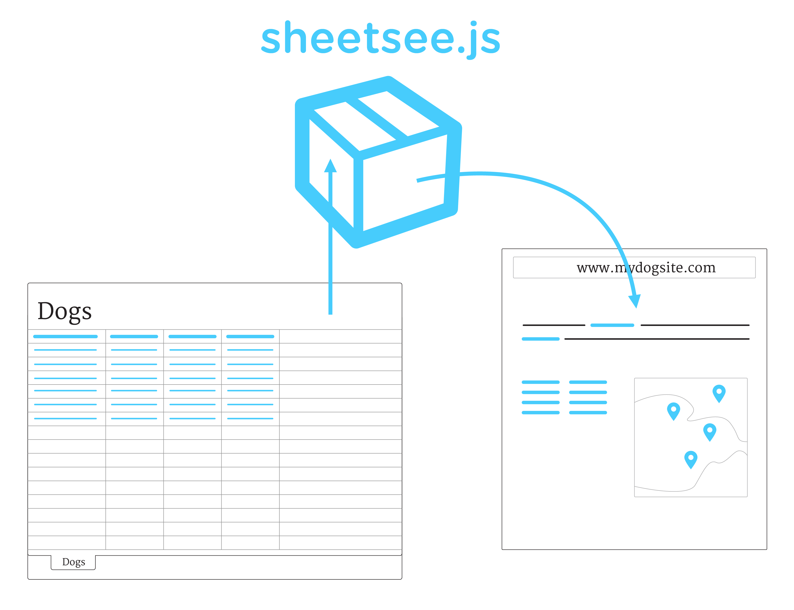

Sheetsee.js is a client-side library for connecting Google Spreadsheets to a website and visualizing the information in tables and maps.
Google Spreadsheets can be used as simple and collaborative databases, they make getting a data driven site going much easier than traditional databases. Read more about using spreadsheets for databases.
Each of Sheetsee's functions are divided into modules. Use just the parts you need; see docs on building. If you don't want to build your own, you can just use the full library which includes all modules, it's here on GitHub.
| Module | Contains | Docs |
|---|---|---|
| sheetsee | Command line module for make a custom build of Sheetsee. | Doc |
| sheetsee-core | Included in all builds. Has helpful working-with-your-data functions. | Doc |
| sheetsee-tables | Contains everything you'll need to create a table including sortable columns, pagination and search. | Doc |
| sheetsee-maps | For making maps with your point, line or polygon spreadsheet data. Built with Leaflet.js. | Doc |
The glitch.com/~sheetseetemplate site will give you an endpoint to use that will return your spreadsheet to you as JSON. The sheetsee.glitch.me site provides template to get started with Sheetsee; it's already set up with a server so that your data is backed up.
There are site templates hooked up to Sheetsee that are ready to be forked on GitHub and used by you, check out the Fork-n-go site.
Sheetsee has just been re-written and there are some breaking changes. Also some nice ones, like dependencies removed. The API for maps with Sheetsee have changed, see the docs.
More resources on using Sheetsee:
| Getting Started | Ideas | Demos | Use |
|---|---|---|---|
| About Sheetsee | Templates | Table Demo | Sheetsee-core |
| Building Sheetsee | Tips! | Map Demo | Sheetsee-tables |
| Basics | Sheetsee-maps |